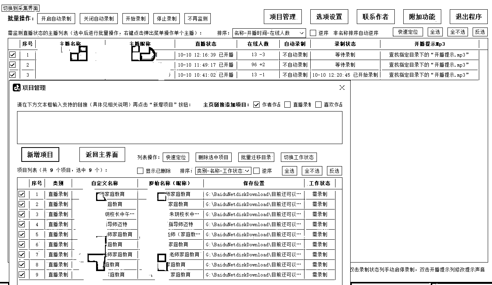

来源：https://b16xnqwk20.feishu.cn/docx/EHJWdFbQBoMSbAxvtGwcjdyqnlg
生财圈友们大家好，我是宋老师（账号：宋老师帮你做课）
目前是全网做课卖课赛道头部，年变现800万+，5000多学员中200多位变现100万+。
在刚刚过去的7天里，我又搞了个“幺蛾子”——我放弃了十多万粉丝的大号，花7天时间，用只有两千粉的新号去直播卖课。
先说结果：在没有投流、纯新号的情况下，场观拉到1万，且稳定在线人数240人。
对于这7天的直播经历，我和我团队的小伙伴做了深度复盘。
接下来，我会把这7天我做对了哪些事情、踩了哪些坑，毫无保留地分享给各位圈友。
很多教做直播的老师都会告诉你，下播后要做大量的数据复盘，怎么看数据、怎么看场观、怎么看巨量后台等等，但我告诉你，前期直播起号的时候，这些数据根本不需要深度研究。
开播前7天，你每天的KPI只有两个。
只要抓住两个核心目标，并且完成它，你的场观也能和我一样能破万。
在干货分享之前，先做个简单的自我介绍，便于大家快速知道我的价值：
我的五个标签:
1.目前自媒体头部的做课&卖课博主一流量能力
2.原来的新东方总监，最高记录同步管理80w学生社群一教学能力
3.做知识付费两年内，保证每周2场私域直播—直播能力
4.6000多位知识博主的老师一成绩
5.很多百万博主背后做课的男人
下图是我第一天的直播数据，场观877，是一个很正常的新号开播数据。
但大家仔细看就会发现，我的停留其实非常牛，直接拉到3.4分钟。
要知道，在知识付费赛道，停留能拉到1分50秒已经很厉害了。
第一天下播是半夜12点半，我和团队小伙伴趁热打铁，复盘到凌晨三点多。
当时我们仔细分析了直播过程中做的每一个动作，逐帧回看直播的回放视频，做深度复盘。
发现新手第一天开播最需要做的只有两件事：拉停留和做灯牌数据。
接下来我会逐一分享这两点。
当然，为了第二天开播能有进步，我们在复盘的过程中也总结出了需要改进的地方，我会在后面分享给大家。
新手主播第一天开播，最需要先做好的一件事就是：拉停留。
核心逻辑是：先有停留，才能有推流。
第一天开播的时候，我只干了一件事儿：卖关子。
你一定看过这样的直播间：主播每过五分钟就会拉点赞。
点赞破多少万，发福袋、上福利、讲xx干货，这是主播常见的套路。
很多人认为这个动作就是在“卖关子”，但开播第一天，我没有做任何拉点赞的动作。
为什么呢？
先和我一起思考一个问题：直播间的点赞数据重要吗？
其实，点赞数据根本不重要，它是权重最低的一项数据。
那么为什么还会有很多知识主播会在直播间拉点赞数据呢？
从本质上来说，让用户点赞，其实是主播在做服从性测试。
通过点赞这个动作，来判断直播间的用户到底会不会听他的话。
比如一个健身的主播在推课之前做了一波拉点赞的互动——
把赞点到两万，我来教大家三招秘籍，让你轻松练出直角肩。
通过点赞数的增长速度，主播可以判断推课动作是否可以正常推进。
如果点赞的人没几个，那推课的效果肯定不好，这就是通过拉点赞数据去做服从性测试。
开播第一天，首先直播间里没有多少人，再加上粉丝对你都不熟悉，服从性测试完全没必要。
所以第一天最该做的，是拉停留，先把人留下来才是关键。
我的直播话术就是尽可能地卖关子，把用户的兴奋点吊起来，然后使劲儿憋。
拉停留的核心原因，是要遵循抖音的直播逻辑。
我和我的团队整理了18个拉停留的方法，篇幅有限，在这里就不展开说了。
抖音的直播逻辑是，“小考-中考-大考”逻辑。
小考是什么呢？
抖音5分钟会给你来一次小型考试，你的下一个5分钟的推流速度，取决于你上一个5分钟的内容质量。
也就是说，如果你上一个5分钟讲得好，那么下一个5分钟推流就多。
抖音的每一场直播，都是一次中考。
你每一次直播的成绩直接影响到下一次直播的开场，所以每一场直播，都是一次严峻的战斗。
所谓大考，是每7天都会有一次大螺旋。
每7天，抖音会给你推一波大流量，看你能不能接得住。
这就好比我作为一个年收入达到一千万的创业者，这时命运给我提供了一个新的风口，测试一下我能不能抓住这波风口干到上亿级的盘子。
如果我能接住，就能成功跃迁到更高的圈层中，否则只能继续停留在原有圈层里，甚至会退到更低一级的圈层中。
所以当你知道抖音的考试机制之后，你就明白我为什么第一天的时候要猛拉停留了。
可能你会问，要怎么去拉停留呢？
说白了，就是吊着直播间用户的胃口就行了。
举个例子，比如我今天给大家直播拆解：我是如何用7天的时间，把一个新号的直播场观拉到一万的。
在讲这个核心内容之前，我会先讲一些概念性的东西，和本次主题相关，但又没办法直接给出答案；
然后再讲我需要做哪些准备，慢慢地引导答案，而不是直接就把答案讲出来。
总之，给用户足够的好奇点，让他想继续听你讲下去。
停留做好了，如果有余力，可以再做一个数据——灯牌数据。
在所有数据中，灯牌数据的权重是最高的，仅次于停留数据。这也是为什么主播都会每隔一段时间就在直播间里做灯牌数据。
在和团队复盘的时候，我发现做灯牌数据时有个很关键的细节：把飘屏利用起来。
飘屏是管理员可以在后台设置的，配合主播做动作的工具。
比如，我在直播间说，关注主播点亮粉丝灯牌，进2群可以领取做课宝典，这时管理员可以配合设置飘屏的话术，让这段文字从屏幕上飘过去。
再比如，我在讲一个xxx干货，或者即将在直播间发xxx福利，管理员都可以在后台设置对应的飘屏文字，作为直播内容的补充。
所以，飘屏要在开播前就做好，提前和运营小伙伴沟通好直播的节奏，以及不同时间节点飘屏该写什么东西。
这样在直播的时候，到不同的时间节点时，直接把对应的飘屏内容复制粘贴就行，配合会更默契。
在拉停留的过程中，也可以配合做灯牌数据。
比如讲到关键的时候，可以突然停下来，引导直播间用户亮灯牌，然后再继续往下讲。
这样既拉了停留，也拿到了灯牌数据，一箭双雕，具体话术这里就不展开细讲了。
我在第一天开播的时候，有意识地做了拉停留、做灯牌数据这两个动作，但仍有可以优化的地方。
和团队复盘了三个小时之后，总结出可以优化的几个点：
1.开播前提前设置好飘屏，注意避开违禁词
2.开播前设计好直播贴片
3.拉足停留时长，卖关子做优化
4.对于连麦太细的问题，可以直接引导后台私信加微
5.连麦太复杂的问题，直接要礼物
6.要灯牌要点赞，非乞求型人设
以上复盘总结，对我第二天开播数据的提升带来非常大的帮助。
由于篇幅有限，具体的复盘过程这里就不展开讲了，如果大家想进一步探讨，欢迎私下交流。
下面是我们每次《直播的sop》，分钟级的内容。花个几天时间准备，就可以开播了。不要犹豫，抓紧行动！
第二天的数据如下，场观直接从第一天的800多涨到了3524。这说明了我第一天的战况还不错，官方给了我一小波推流。
我的停留时长也涨到了三分多钟，证明给我的流量质量也比较高。
第二天该重点抓哪些数据呢？
直播第二天，你的直播间依旧处于不稳的状态，先把底层坐稳是关键，拉停留就是底层。
有了第一天的直播经验，你应该知道了讲什么内容能留人，讲什么内容能上人，不断地用复盘得出的规律继续去做尝试，优化你的拉停留话术。
你要知道你的直播间有哪些流量密码，比如我发现我只要在直播间喊“月收百万”，直播间就会有人进，流量就会涨。那我肯定会在直播间里多喊几次，让我的流量起来。
如果喊了半天直播间流量都没什么变化，那就说明这不是你的流量密码，赶紧做调整。
在灯牌这件事上，第一天是随缘搞，第二天就要发力搞了。
我具体是怎么做的呢？接下来给大家分享三种要灯牌的方法。
方法一：发稀缺资料。
注意一定要体现你资料的稀缺性。
比如我在直播间里分享了一个能够自动录同行直播的一个神器，我的话术是这样的——
“各位直播间的朋友们，这个神器帮助我们解决了很多卖课百万的知识博主从0到1直播卖课的问题，在这里我免费分享给大家好不好？各位想要这个神器的，在评论区打个 ‘想’字。”
这时候，评论区的刷屏就开始了，我继续讲下一段话术——
“来，小助理帮我记一下这些评论区打了‘想’字的老师，一会儿统一给他们安排上好不好？我们截止到22:10，打‘想’的老师统一给安排。小助理记得识别一下，没点灯牌的我们不给安排这个神器哈，因为没灯牌说明不是自己人，核心的干货只给咱们自己人分享。”
这一波之后，不仅评论区热热闹闹的，而且灯牌也都飘起来了。
方法二：打情感牌。
这个方法可以拉近和直播间用户之间的距离，比如我在直播的时候会这样说——
“大家没点关注、没点亮灯牌的，记得点个关注、上个灯牌哈，成为宋老师的自家人。自家人有什么好处呢？
你连麦的时候我会第一时间看到你的问题，也会第一时间看到你。你点了灯牌之后，你的名字前面就写着‘宋老师’三个字，我就知道你是宋老师的自家人，那我肯定优先回答你的问题。
我是原来新东方的总监，线下卖过两个亿的课，线上也卖了两个亿的课，现在已经有6000多知识付费学员，很多头部大V都是我的学员。”
你看，我这样说完之后，用户就觉得他和你成为朋友了，他自然就会给你点个灯牌，这就是打情感牌的重要性。
方法三：点对点要灯牌。
什么叫点对点要灯牌呢？举个例子，比如直播间里一个用户向你提问，但是他没点亮灯牌，那这个时候就可以这样说——
“xxx的这个问题问的特别好，但是你没亮灯牌啊，不是咱自家人对吧？直播间的朋友们啊，想提问的老师统一点一波灯牌，亮了灯牌的我再回答问题。”
你看，虽然我好像是点对点地要灯牌，但其实我喊的不只是他一个人，这种感觉就比较微妙了。
还有个技巧，就是一定要写适合自己的直播脚本。下面是我常用的一个模板，希望能帮到各位。
第三天的场观直接冲到5704了，数据涨得非常猛。
在第三天的时候，我只做了一件事——把钩子做扎实，猛搞数据。
做钩子的方法我总结了有大几十种，根本讲不完。可以多尝试不同的下钩子方法，筛选出效果最好的，在直播间里循环使用就好。
连麦的过程中肯定会讲一些干货，必须三分钟做一次数据。
最简单的方法就是让大家在评论区里写评论，比如我经常会在直播间里问——
大家觉得应该先做课还是先直播？觉得先做课的扣1，觉得先直播的扣2。
这时候评论区会疯狂刷屏，其实是给你自己留出做数据的时间了，你不能啥也不说，就一直看着评论区等他们扣数字，你肯定是要做动作的。
你可以做人设话术，也可以做要粉丝灯牌的话术。
要注意一点就是，做数据的话术不要太长，越简洁精炼越好，越短越有利于循环。
钩子是个好东西，第三天的直播里我一共用了两个钩子，而且我把这两个钩子的价值包装得非常高。
我不停地在直播间念叨，必须加团才能领到我的钩子，这样我粉丝团的数据就会猛涨，对直播间的整体数据也会拉高很多。
比如我在直播间的时候会说，我有录制【同行抖音直播】的神器，可以帮你精准吸取同行头部大V的直播打法，快速搭建自己的直播间话术。想要这个神器的老师评论区扣一波“想要”，给大家安排。

更高级的是，每次同行开播，都有提示音。大家可以听听这条提示音感受一下。
还有几套头部大V的直播话术稿（做好拆解的），也都可以分享。
他们看见我的这个东西实用性非常强，而且很稀缺，在别的地方根本找不到，所以大家都想来找我领，自然而然就来到了我的私域。
之前我也分享过《30天私域卖课60W是什么体验》，感兴趣的老师可以看下。
我一开始连麦的时候，容易被用户牵着鼻子走，思路被带跑偏。
后来我们复盘之后梳理出来了固定的连麦sop，无论是谁跟我连麦，我只问他三个问题：
第一，你做什么赛道？
第二，你现在一个月赚多少钱？
第三，你想问我什么问题，只能问一个。
当我连麦sop固定之后，连麦的主动权就在我手里了。
很多老师来和我连麦的时候，总想着要长篇大论地做自我介绍，我就会立刻打断他，你直接按照我流程来，说重点就行。

第四天的场观只有5367，比第三天下滑了，因为我这一天直播犯了个很严重，但又不可避免的错。
如果大家看了我的直播就会发现，第四天的时候我出差了，所以直播的时候我的直播背景、电脑灯光都没了。
但条件再差再艰苦，也不能断播，否则前三天的仗就白打了。
硬着头皮上播，总比直接投降放弃要好。
大家可以感受一下，这么丑的背景，居然都能拉到200人在线！
所以这一天虽然直播数据有所下滑，但有一种虽败犹荣的感觉。
直播最忌讳的就是断播，七天是一个直播的循环周期，尤其是前七天你的账号数据还没跑起来，如果断更的话，直播间流量的影响会非常大，前三天的努力全白费了，相当于又要从头开始。
所以不管环境多恶劣，都要坚持上播。
那天直播的时候我刚从飞机下来，整个人气色特别不好，这个情绪是会传递给直播间粉丝的。
直播背景是个酒店的大白墙，没有任何补光，这个视觉效果非常不好，所以数据会受到很大影响。
但好在没有下滑太多，和前一天相比算是场观稳定了。
如果我没播，肯定必死；但是播了，就还能挣扎着把数据往回拉一下。
后来和团队复盘一下，如果那天是在公司直播的，当天场观能拉到两万。
这个问题后面再细说。
顺便想提一下，要是有正在做，或者是想做直播的老师，复盘一定是核心。
我的小助理，每次直播都会实时填写节点，以便于看回放的时候，找到细节的问题，而且还有利于做直播贴片。
第五天我找了个背景和灯光都不错的地方直播，又把场观拉了回来。
直播到这个阶段，其实已经把直播流程和内容固定下来了，什么时间节点该讲什么东西，都非常清晰。
所以即便是经历了前一天的滑铁卢，数据仍然会有小幅上涨。
第六天我回到公司直播的，经过前五天的积累，已经明确知道什么是流量密码了。
在开播之前，和小伙伴开会把直播框架微调了一下，又优化了互动形式。
当天连麦了12个，直播间场观直接拉到一万。
所以我前面说，如果第四天的时候没有惨遭滑铁卢，当天场观会直接破两万。
第七天的数据又下滑了，因为最后这一天我又踩了个坑。
后来和我团队小伙伴做了一次深度复盘，其实这里涉及一个非常重要的逻辑，以后有机会专门写一篇文章去拆解这件事。
我前几天的直播经历足以证明，如果没有遇上类似我第四天那种不可抗力因素，其实直播场观过万根本不需要7天，只要按照我前面说的方法去做，3-5天时间足矣。
七天的直播历程给大家分享完了，最后分享几个核心点。
下面这9条至关重要，尤其是前三个点非常关键。
其实直播并没有大家想象中那么难，只要前七天坚持下来了，直播卖课百万只是时间的问题。
当然，直播变现的前提是你要有清晰的产品体系，课程是1，直播是1后面的一堆0。
知识付费的核⼼是让你像我⼀样成为⼀个超级个体，成为⼀个超级个体⼾，能够⼀个⼈⼀部手机、⼀台电脑、⼀个短视频账号，⼀个直播间，⼀⻔课程，就真正去拿结果 。
希望大家都能在人均自媒体的时代拿到大结果，成为超级个体，有任何知识付费相关问题，欢迎随时与我交流讨论。
我是宋老师，23年帮助500位老师卖课50w，欢迎和我一起卖课生财!